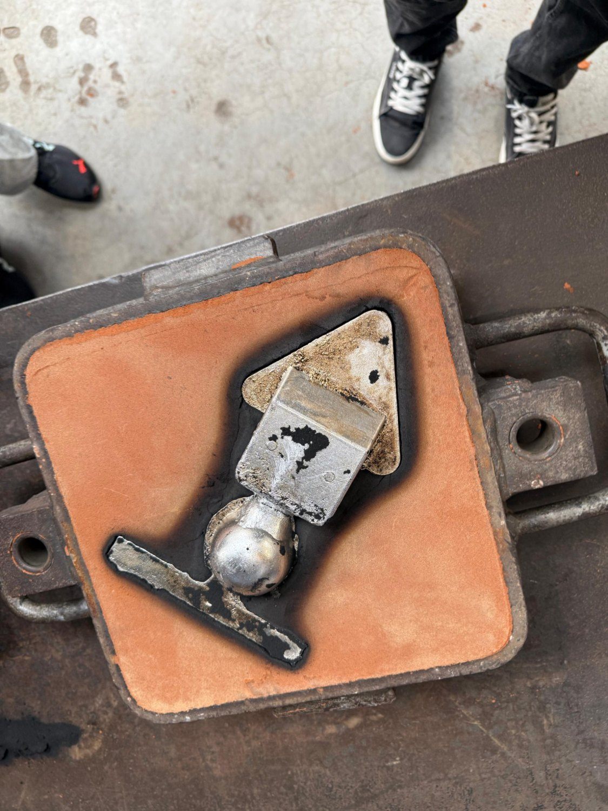
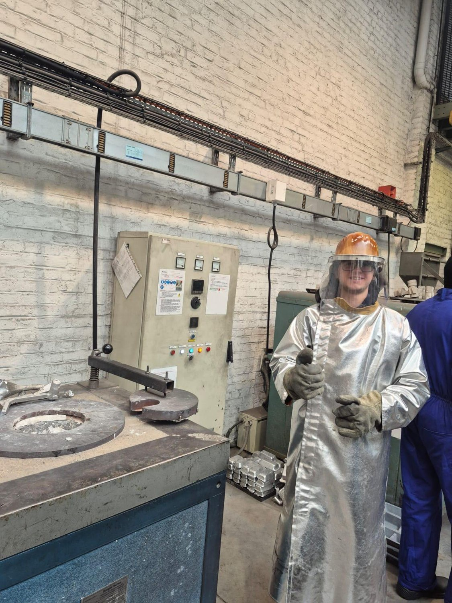
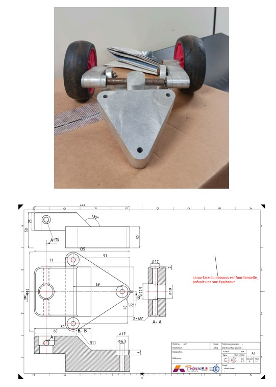
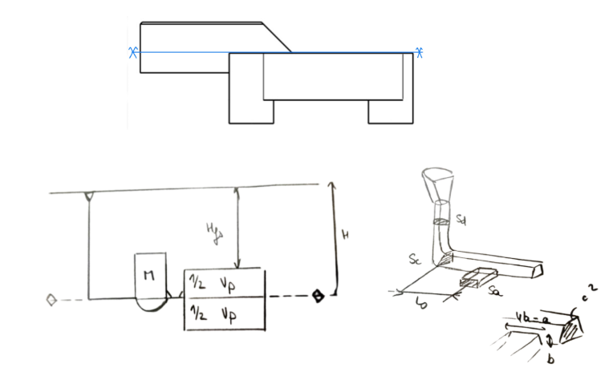
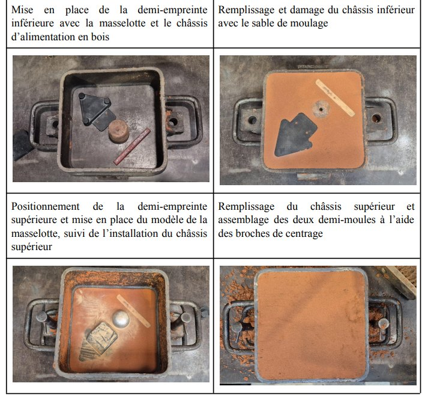
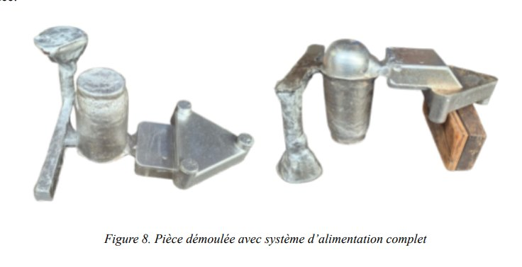

FABRICATION · PROJET EN ÉQUIPE · 2026
Moulage en sable d’aluminium - support de skateboard BMW
Étude d’un procédé de fonderie depuis la géométrie de la pièce et les surépaisseurs jusqu’au moulage, à l’alimentation et au contrôle qualité.
3DEXPERIENCECastingFabricationQualité

PRÉSENTATION DU PROJET
Concevoir, fabriquer et contrôler
Définition des surépaisseurs d’usinage, dimensionnement des masselottes, étude du système d’alimentation et préparation du moule en sable.
Analyse des opérations de fabrication, inspection visuelle de la pièce et évaluation du rendement matière.

EXTRAITS DU RAPPORT
Le procédé, étape par étape
Figures et photos issues du rapport original. Cliquer pour agrandir.







